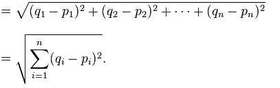
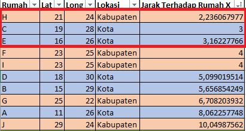

Algoritma K-Nearest Neighbor¶
Langkah-langkah K-Nearest Neighbor :¶
- Menentukan parameter K sebagai banyaknya jumlah tetangga terdekat dengan objek baru.
- Menghitung jarak antar objek/data baru terhadap semua objek/data yan gtelah di training.
- Urutkan hasil perhitungan tersebut.
- Tentukan tetangga terdekat berdasarkan jarak minimum ke K.
- Tentukan kategori dari tetangga terdekat dengan objek/data.
- Gunakan kategori mayoritas sebagai klasifikasi objek/data baru.
Contoh Perhitungan KNN Sederhana¶
Misalnya ada sebuah rumah yang berada tepat di tengah perbatasan antara Kota Bandung dan Kabupaten Bandung, sehingga pemerintah kesulitan untuk menentukan apakah rumah tersebut termasuk kedalam wilayah Kota Bandung atau Kabupaten Bandung.
Kita bisa menentukannya dengan menggunakan Algoritma k-NN, yaitu dengan melibatkan jarak antara rumah tersebut dengan rumah-rumah yang ada disekitarnya (tetangganya).
Pertama, kita harus menentukan jumlah tetangga yg akan kita perhitungkan (k), misalnya kita tentukan 3 tetangga terdekat (k = 3).
Kedua, hitung jarak setiap tetangga terhadap rumah tersebut, lalu urutkan hasilnya berdasarkan jarak, mulai dari yang terkecil ke yang terbesar.
Ketiga, ambil 3 (k) tetangga yg paling dekat, lalu kita lihat masing-masing dari tetangga tersebut apakah termasuk kedalam wilayah Kota atau Kabupaten. Ada 2 kemungkinan:
- Bila dari 3 tetangga tersebut terdapat ada 2 rumah yg termasuk kedalam wilayah Kota Bandung, maka rumah tersebut termasuk kedalam wilayah Kota Bandung.
- Sebaliknya, bila dari 3 tetangga tersebut terdapat 2 rumah yg termasuk kedalam wilayah Kabupaten Bandung, maka rumah tersebut termasuk kedalam wilayah Kabupaten Bandung.
Dalam menentukan nilai k*, bila* jumlah klasifikasi kita genap maka sebaiknya kita gunakan nilai k ganjil*, dan begitu pula sebaliknya bila* jumlah klasifikasi kita ganjil maka sebaiknya gunakan nilai k genap*, karena jika tidak begitu, ada kemungkinan kita* tidak akan mendapatkan jawaban*.*
Pembahasan Lebih Detil¶
Pada kasus diatas, kita menghitung jarak suatu rumah terhadap tetangga-tetangganya, itu berarti kita harus mengetahui posisi dari setiap rumah. Kita bisa menggunakan latitude dan longitude (atau garis lintang dan garis bujur) sebagai posisi.
Untuk mempermudah pemahaman, saya akan coba menggunakan data yang nilainya sederhana. Data yang akan digunakan adalah sebagai berikut:

Dari data diatas, kita mendapatkan beberapa informasi, diantaranya:
- Independent Variables, yaitu variable yang nilainya tidak dipengaruhi oleh variable lain. Pada contoh data diatas, yang termasuk independent variable adalah Lat, dan Long.
- Dependent Variables, yaitu variable yang nilainya dipengaruhi oleh variable lain. Pada contoh data diatas, yang termasuk *dependent variable*adalah Lokasi.
- Rumah A-E adalah rumah yang masuk ke dalam wilayah Kota.
- Rumah F-G adalah rumah yang masuk ke dalam wilayah Kabupaten.
- Rumah X adalah rumah yang akan kita prediksi menggunakan algoritma kNN apakah termasuk ke dalam wilayah Kota atau Kabupaten.
Didalam dunia Machine Learning*,* Independent Variables sering disebut juga sebagai Features
Selanjutnya kita hitung jarak antara rumah X terhadap rumah A-G dengan menggunakan rumus Euclidean Distance:

Perhitungan jarak rumah X dengan rumah A:
=√(11-19)^2 + (26-25)^2
=√(-8)^2 + (1)^2
=√65
=8,062257748298550
setelah jarak rumah X dengan rumah A ditemukan tinggal menghitung jarak antara rumah X terhadap rumah B-G
Setelah dihitung, selanjutnya adalah urutkan jarak tersebut dari yang paling kecil ke yang paling besar, hasilnya adalah sebagai berikut:

Dapat dilihat dari hasil perhitungan diatas, bahwa ternyata 3 tetangga terdekat dari rumah X adalah:
- Rumah H (Kabupaten) yang memiliki jarak 2.24,
- Rumah C (Kota) yang memiliki jarak 3, dan
- Rumah E (Kota) yang memiliki jarak 3.16.
Dari ke-3 tetangga terdekat, terdapat 2 rumah yang termasuk kedalam wilayah Kota dan 1 rumah yang masuk ke dalam wilayah Kabupaten. Sehingga dapat disimpulkan, bahwa Rumah X adalah rumah yang termasuk kedalam wilayah Kota